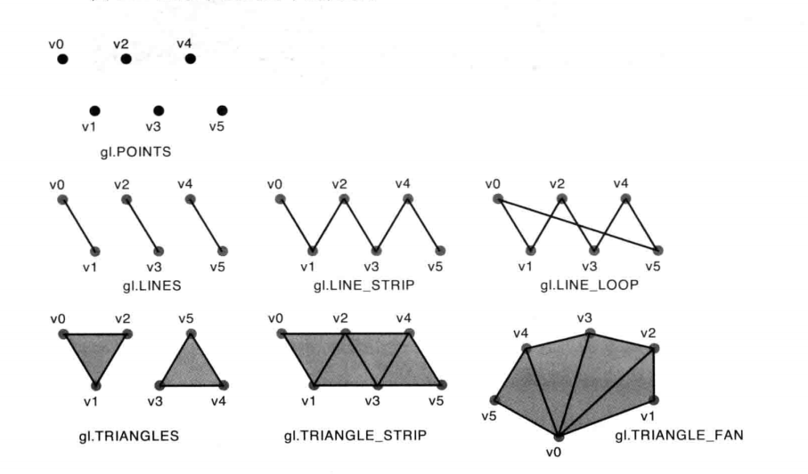

点线面绘制
上一节中介绍如何绘制一个三角形，使用了 gl.drawArrays(gl.TRIANGLES, 0, 3); 这条语句。第一个参数决定
webgl 如何根据缓存区中的顶点绘制怎样的图形。
gl.drawArrays 的第一个参数共有 7 个枚举值：
- gl.POINTS：绘制一系列点。
- gl.LINE_STRIP：逐顶点绘制连续的线段。
- gl.LINE_LOOP：逐顶点绘制连续的线段，并在最后进行首尾相接。
- gl.LINES：两两顶点绘制多条线段。
- gl.TRIANGLE_STRIP：前三个顶点绘制一个三角形，然后依次取下一个顶点与该顶点之前的两个顶点组合成一个三角形。
- gl.TRIANGLE_FAN：前三个顶点绘制一个三角形，然后依次取下一个顶点与该顶点之前的一个顶点还有最开始的一个顶点组合成一个三角形。
- gl.TRIANGLES: 三个顶点一组绘制三角形。
假设缓冲区的顶点顺序依次是 v0，v1，v2，v3，v4，v5，上述枚举绘制的情况如下：

一些示例的思维
比如说想绘制一个正方形，那么就可以使用 gl.TRIANGLE_STRIP 或 gl.TRIANGLE_FAN 使用 3
个顶点绘制，也可以使用 gl.TRIANGLE 然后使用 6 个顶点绘制。
绘制曲线则需要使用 gl.LINE_STRIP 结合贝塞尔曲线公式标出沿途的大部分点绘制。